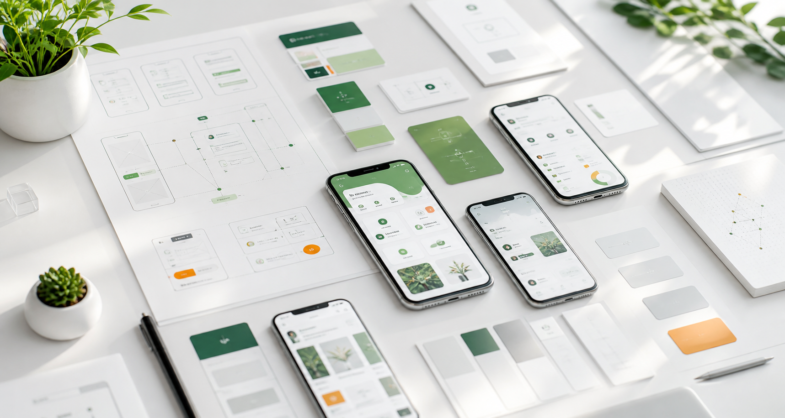
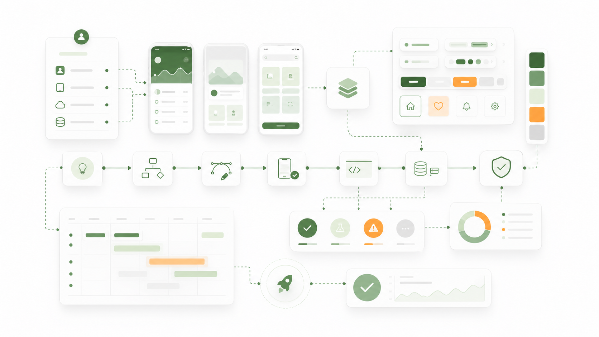

iOS App 开发
围绕移动端核心流程，完成界面开发、接口联调、测试修复和发布准备。

iOS / API / TestFlight / Release prep
About us
我们关注移动端产品从原型、界面、接口到上线准备的完整过程。项目可以从一个清晰需求开始，也可以从已有系统的移动端改造开始。
Services
围绕移动端核心流程，完成界面开发、接口联调、测试修复和发布准备。
支持用户端、管理端、内容展示、业务办理等互联网应用模块开发。
提供产品结构梳理、页面原型、视觉界面和交互流程整理。
支持智能控制系统集成、信息系统运行维护和软件后续版本迭代。
面向应用内内容、运营页面、基础图文素材和轻量数字内容制作。
协助评估技术路线、开发周期、接口条件、隐私说明和上线准备事项。
Product detail
官网视觉偏轻，但内容不虚。我们把设计稿、功能边界、接口条件和上线事项放在同一条工作线上处理。

Project directions
How we work
我们会先确认需求范围和交付边界，再整理原型、接口、功能清单和测试重点。开发过程中保持阶段反馈，减少后期返工。
Contact
请说明项目背景、期望平台、已有资料和计划时间，我们会根据内容做初步沟通。